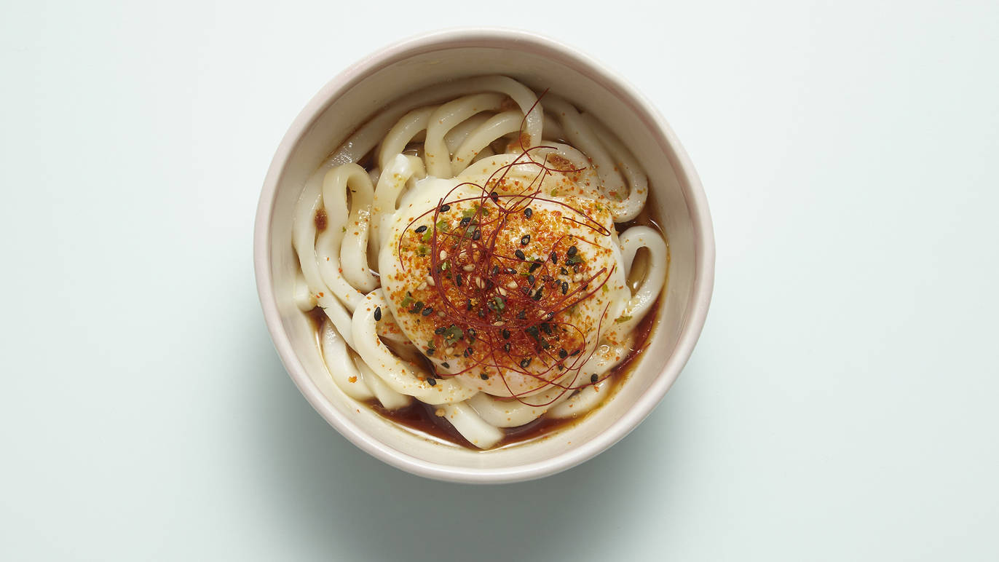
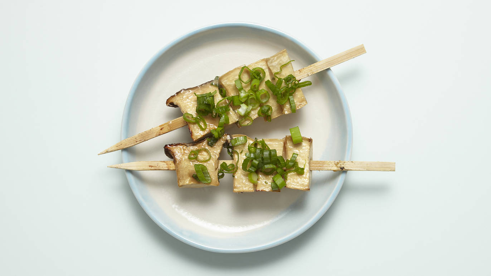

FINER DETAILS
Dalston
89 Kingsland High St
E8 2P
 Dalston Junction Station
Dalston Junction Station
 Dalston Kingsland Station
Dalston Kingsland Station
Yakitori’ literally translates as ‘fry chicken’ but there’s nothing Dixie about it. The chickens are free-range Goosnargh, hailing from Swainson House Farm in Lancashire. The closest you’ll get to yakitori’s Deep South cousin is the koji chicken – deep-fried chunks of thigh. It’s indulgent, to be sure, but the coating is dry and crisp – this is undoubtedly the best karaage I’ve had in London.

Each skewer is very different; the wing with shiso and lemon was crisp, pleasantly sweet and a little sharp. The moreish tsukune skewers – packed full of chives – came with a raw egg to dip the meat into. There’s also a nice twist on English pub grub with a katsu curry scotch egg – the yolk runny, the coating crisp, the meat juicy: it was great. The negima brought back memories of Japanese festivals: the best thing about Jidori is how evocative the flavours are – everything tastes just as it would in Japan.

With a nice selection of craft beers – local and Japanese – plus a well-curated cocktail menu, the drinking element is more than taken care of. We really enjoyed our ‘Shiso into you’ (with a name like that, how could you not?), a spin on a classic sour: it was sharp and frothy, while the delicate shiso held its own against the alcohol.
Go with a group of friends, try as many dishes and drinks as humanly possible, and give Morley’s a miss on the way home.
BEST BITS
 Katsu curry scotch egg
Katsu curry scotch egg
 Pork fillet tonkatsu
Pork fillet tonkatsu
 Great craft beer selection
Great craft beer selection